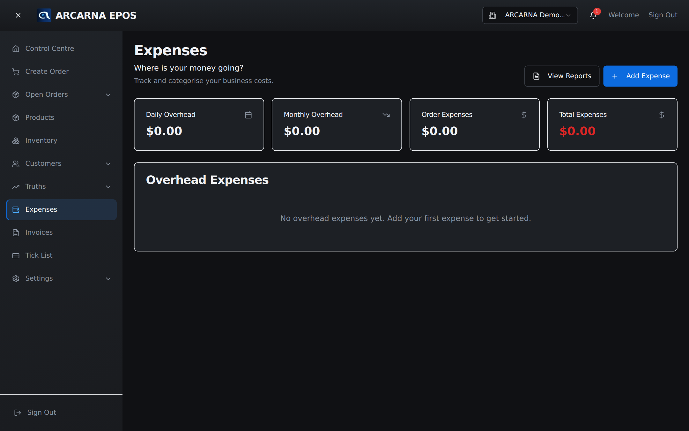
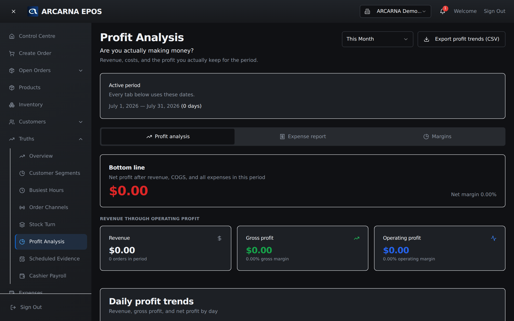

Staff training manual
Staff training manual
Money going out matters as much as money coming in. Logging costs is what turns "we were busy" into "we made money" — or reveals that we didn't. MANAGER
Why it matters
Revenue up doesn't mean profit up
arcarna exists because a busy shop can still quietly lose money. A strong week of takings can hide couriers, taxis, waste and generous service that cost more than they returned. You can only see that if the costs are written down. Every expense you log makes the profit Truths in Section 8 a little more honest — and honest numbers are the whole point.
The screen
The Expenses screen
Open Expenses from the menu. It lists what you've spent, grouped so you can see where the money goes, and it's where you add each new cost.

Recording a cost
Logging a business expense
These are the day-to-day running costs of the shop — the ones that aren't tied to a single sale.
- On the Expenses screen, start a new expense.
- Category — what kind of cost it is (e.g. delivery, utilities, waste, supplies). Categories let arcarna show you which areas cost the most.
- Amount — how much it was, e.g. £42.00.
- Date — when it happened, so it lands in the right period.
- Notes (optional) — a short description for your own memory or an audit later.
- Save. The cost now counts against your profit for that period.
Costs tied to a sale
Order expenses
Some costs belong to one specific order — a courier for a single delivery, say, or a special-order surcharge you absorbed. Where the till supports it, these can be attached to the order itself rather than logged as a general expense. That's what lets arcarna answer the sharp question: did that order actually make money once we'd paid to fulfil it?
Seeing the pattern
Expense reports
Open Expense reports to see costs summarised over time and by category. This is where a run of small costs becomes a visible total — and where you spot the category that's grown without anyone deciding it should.
